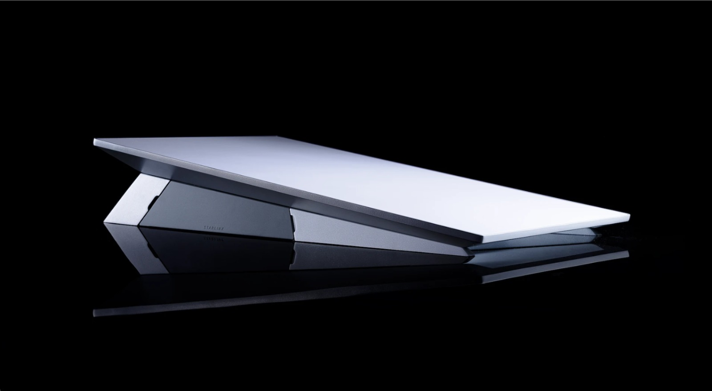
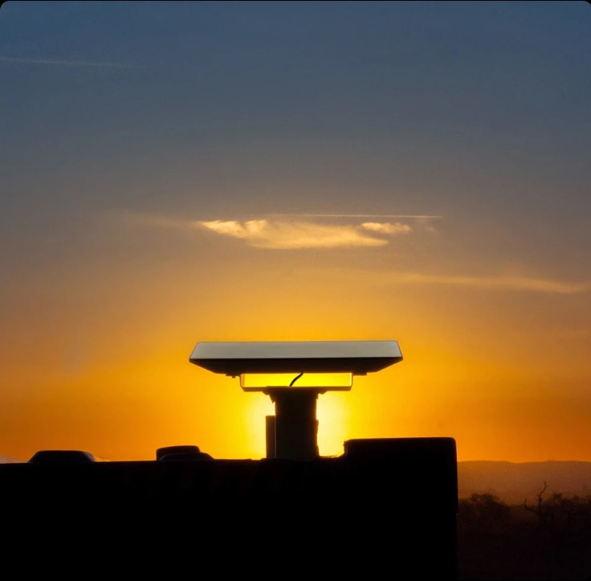
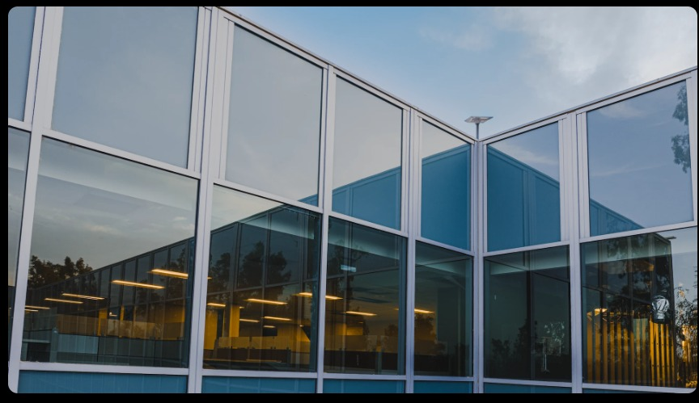

Starlink for Business
Reliable high-speed internet for businesses.
Starting at £30/m with a hardware cost of £299.
Starlink Performance, built for resilience
Engineered for durability, the Starlink Performance is enclosed in aluminium and designed for resilient connectivity in harsh and remote environments, extreme weather, and in-motion usage. Operates on AC and/or DC power.
Starlink Performance includes a 3-year warranty, is built for 10-year survivability, and comes ready for permanent installation with a mount of your choice.


Gigabit speeds available in 2026
Starlink is focused on making network enhancements which will enable gigabit speeds starting in the most remote places on Earth with the Performance Kit. Service plan upgrades will be available in 2026. No hardware changes needed.
The Starlink Performance Kit is currently capable of download speeds up to 400+ Mbps for fast, reliable connectivity whenever you need it.
Starlink for Business
Reliable high-speed internet for businesses.
Starting at £30/m with a hardware cost of £299.
Flexible data allotment
Our Priority Plans give you the flexibility to match your data needs. Choose from one of our preset plans, and adjust by adding blocks of data in increments of 50GB or 500GB.
24/7 prioritised service
Priority Data customers are given network precedence and receive consistently faster speeds. Customers on Priority Plans will also benefit from 24/7 prioritized support, a publicly routable IPv4 address, and a Service Level Agreement.
Flexible, monthly contracts
Starlink offers monthly contracts. Try the service for 30 days and get a full refund if you're not satisfied.

Easy to get online
The Starlink Kit arrives with everything needed to get online in minutes. All you need is a clear view of the sky.
Connect with an expert
Find out why enterprises choose and trust Starlink.